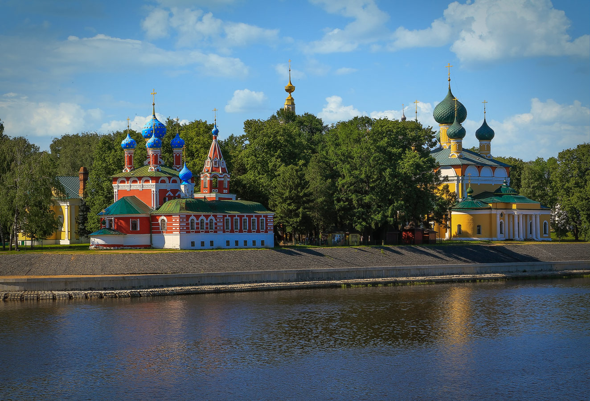
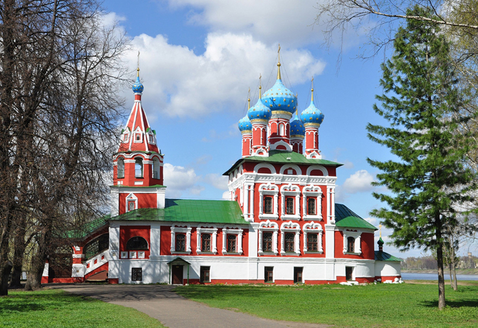
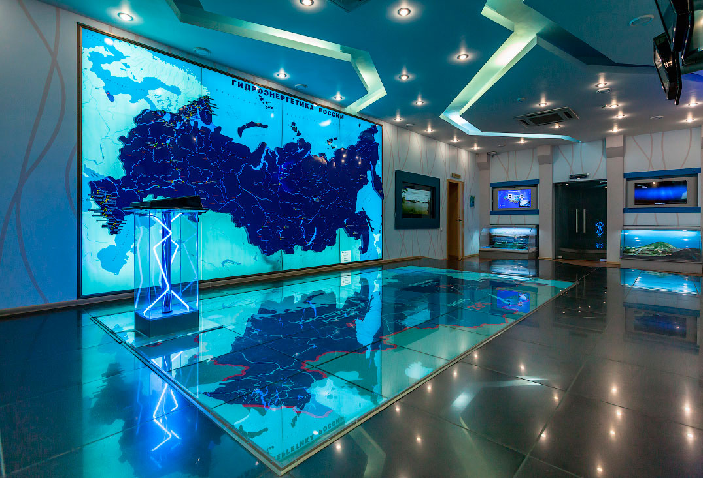
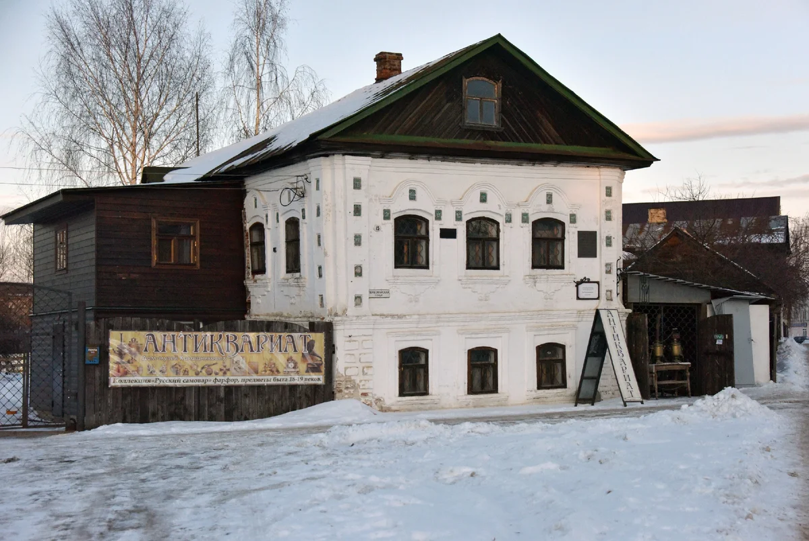

Углич
Углич — один из древнейших русских городов. В 937 году его основал Ян Плескович, родственник княгини Ольги. В городе сохранились старинные монастыри и храмы, княжеские палаты и купеческие дома XVIII–XIX веков. В местных музеях можно увидеть коллекции древнерусской живописи, деревянной скульптуры, резной мебели и ценной посуды прошлых веков. Именно здесь 15 мая 1591 года был убит царевич Дмитрий – младший сын Ивана Грозного и последний потомок династии Рюриковичей.

Угличский кремль, расположенный на высоком берегу Волги, — это Княжеские палаты, церковь Царевича Димитрия на Крови, Спасо-Преображенский собор, колокольня Спасо-Преображенского собора, Богоявленский зимний собор и здание Городской думы (Дом градоначальника). Уникальность композиции в том, что она представляет разные эпохи русской истории и культуры, объединенные общей биографией, легендами и загадками. Попадая сюда, мы словно путешествуем во времени.

Аналогов российского интерактивного Музея гидроэнергетики, расположенного в Угличе, в мире нет. Он разместился в здании управления Волжского исправительно-трудового лагеря, которое сегодня является памятником. 11 залов его экспозиции рассказывают о развитии гидроэнергетики. Экспозиция рассказывает о развитии гидроэнергетики в СССР и России, об ученых, трудившихся в этой сфере, и их изобретениях, об истории старейших российских ГЭС.

Старинный дом Василия Калашникова находится в исторической части Углича. Сегодня в здании XVIII века располагаются три экспозиции — Музей стекла, чайная с русской печью и самоварами и кабинет конструктора, который рассказывает о его жизни и изобретениях. Калашников проектировал наливные баржи для перевозки керосина, конструировал воздуходувы и пароперегреватели — устройства для паровой машины.
